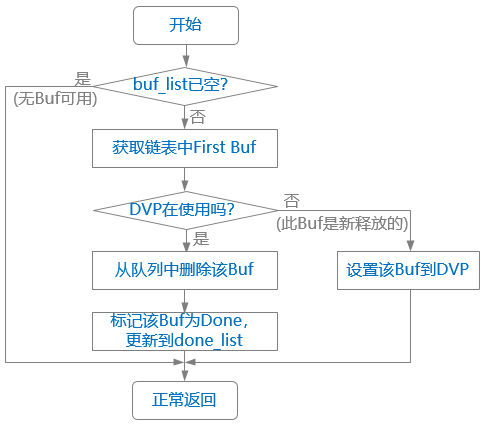

关键流程设计
初始化流程
DVP 驱动的初始化过程总体分为两大部分：
- 阶段一：由 probe() 接口完成资源申请、注册 subdev、注册 buf、注册 notifier 等操作。
- 阶段二：由 notifier 的 complete() 接口完成，需要等 Sensor 执行完初始化（其 probe()接口）后才能执行，完成的操作有：注册 device、注册 device、配置 link 等。
Probe 过程

-
初始化 media device。
-
注册 subdev，提供 subdev_ops（其中定义了 pad_ops）。
-
注册 pad，包括为 subdev 注册两个 pad：source + sink。为 device 注册一个 pad。
-
注册 buf，初始化 vb2_queue，需要提供 vb2_ops（驱动相关）和 vb2_mem_ops（内存分配的回调）
-
注册 V4L2 device，主要是将 DVP 的 dev 关联到 v4l2_device->dev
-
注册 notifier，为了解决 Sensor 和 DVP 控制器之间的初始化顺序依赖问题，需要 DTS 中定义好 endpoint，并提供 notifier_ops。
初始化 notifier 时，会去调用 v4l2_fwnode_endpoint_parse ()解析 DTS 中关于 endpoint 中的配置，包括 bus-type（BT656 等）、极性等，将这些信息保存在 vep->bus 中（在 aic_dvp->bus 需要有备份）。
notifier 初始化过程
在 Sensor 的 probe() 过程中也会调用 Notifier 注册，因为 DTS 中两个设备用 remote-endpoint 已经有关联，DVP 驱动注册过的 notifier_ops->bound() 接口首先会被触发，对方（Sensor）会传过来一个 pad 编号，DVP 将其记录下来方便后续使用（调用 Sensor 的 subdev 接口完成 stream 启动、停止操作）。

随后，DVP 的 notifier_ops->complete() 接口也会被触发调用，DVP 驱动中完成后续的初始化，包括：

-
关联 v4l2_device 和 subdev
-
注册 video device，
-
注册 media device
-
创建 pad 之间的 link，会用到 media_link 结构
media device 出现了两次，是为了在所有 media graph 完全初始化之前就可以提供 media device 给用户态空间。所以一开始先用一部分 entity 初始化 media device。
其中：
-
Master 设备执行 probe 函数的时候，先使用 component_match_add() 接口声明一个 match 队列。
-
然后，使用 component_master_add_with_match 函数将自己作为 master 注册到 component 框架。
-
各 component slave 设备执行 probe 函数的时候，仅使用 component_add()完成 slave 注册。
-
以上各模块的 probe()函数调用先后顺序并不影响。
-
各个 component 都要实现自己的 bind()和 unbind()接口（struct component_ops），component 框架在判断所有 match 队列中的模块都完成了 probe，就会按 先 slave、后 master 的去调用他们的 bind() 接口。而各模块真正的初始化动作都是在各自的 bind() 中去实现。
-
在执行各 bind() 接口时，各 slave 间的先后顺序和 match 队列一致。Component 保证 master 最后执行。
-
aicfb->bind() 中，主要完成 Framebuffer 申请、fb 设备注册、使能 UI 图层、使能 panel 等动作。
Buf 管理
DVP 的 Buf 管理需要用到 V4L2 框架提供的 Video queue 机制外，还需要用到 dma-buf 和 CMA（详见 DE 设计文档中的描述）。
对于每一帧图像数据来说，DVP 的输出有两个 plane：Y 和 UV。针对 DVP 的两种输出格式：YUV422_COMBINED_NV16 和 YUV420_COMBINED_NV12，两个 plane 的空间大小如下表：| - | YUV422_COMBINED_NV16 | YUV420_COMBINED_NV12 |
|---|---|---|
| Plane Y | Width * height | Width * height |
| Plane UV | Width * height | Width * height / 2 |
根据前面对“Buf 队列管理”的分析可知：我们要分配的内存空间至少要有 3 个 Buf，每个 Buf 有两个 Plane。
对应到 Buf 的 ioctl 接口，我们要用到 _MPLANE 结尾的接口。
注册 video queue 时提需要提供 vb2_ops，其中需要 DVP 驱动实现的有五个接口：
- queue_setup
在 APP 发起申请 buf 时调用，这里面主要设置 plane 个数、各 plane 的大小。
- buf_prepare 和 buf_queue
在 APP 每次调用 QBuf 时会调用，分别完成获取 Buf 物理地址、同步 Qbuf list 的处理。
- Stream start 和 stream stop
启动和停止媒体数据（处理流程详见下节描述）。
Stream 启动流程
Stream 的启动是由 APP 发起的，APP 通过 ioctl 接口传入命令 VIDIOC_STREAMON（相应的，停止的命令是 VIDIOC_STREAMOFF）。

Stream 的停止流程相对简单很多，会调用到 Sensor 的停止传输接口：

中断处理流程
-
HNUM Interrupt
用于判断当前 Register 是否可以修改。出现 HNUM Interrupt，表示当前图像帧已经完成 1/4 帧（驱动中默认配置）数据的刷新，意味着此时的 Buf 相关 Register （影子寄存器）可以被修改，软件可以传入下一个 Buf 的参数了。
-
Frame done
用于判断当前 buf 是否完成（done 状态）。出现 Frame done，表示当前帧的数据传输完成，此时该 buf 可以从 QBuf list 切换到 DQbuf list。
按照 DVP 硬件设计的逻辑，HNUM Interrupt 和 Frame done 会间隔着产生，如下所示：
HNUM Interrupt -> Framedone -> HNUM Interrupt -> Frame done -> HNUM Interrupt -> Frame done...
- “处理 Frame done 事件” 的子流程如下：
图 7. DVP 驱动中 Frame done 处理流程 -
“处理 HNUM Interrupt 事件” 的子流程如下：

图 8. DVP 驱动中 HNUM Interrupt 处理流程 -
- “异常！DVP 同时使用了两个 Buf”
-
理论上不应该发生，可认为是一种异常，但因为 DVP 此时正在向 Buf 写数据，所以先不执行 stop，软件上报错。
-
- “DVP 在使用”
-
表示 “DVP 控制器硬件正在使用”。
-